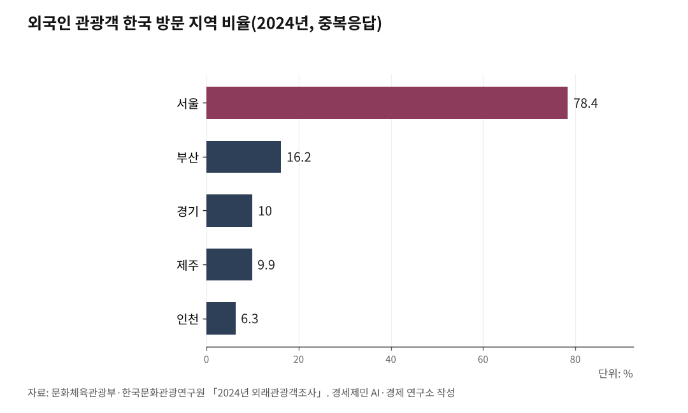

인천공항 매출 2조5천억인데 인천 몫은 1조3천억… '공항경제권' 빠진 성장
2024년 국제선 여객 7066만명 세계 3위, 화물도 세계 3위
외국인 한국관광 21조원 중 인천 몫 6.3%, 환승률은 11.6%
스키폴은 4자 합작회사, 덴버는 세수 공유로 환원 구조 마련
AI경세제민=김갑봉 기자 | 경세제민 AI·경제 연구소 김갑봉 박사 │ 인천공항이 개항 24년 만에 국제선 여객 세계 3위로 올라섰다. 그러나 외국인 관광객의 한국 소비 21조원 중 인천에 떨어진 돈은 1조3천억원에 그쳤다. 이희정 항공우주산학융합원 부원장은 4월 8일 인하대 세미나 「인천공항과 공항도시」 발제에서 이 격차를 짚었다. 외형 성장과 지역 환원의 간극을 좁히려면 공항경제권 거버넌스가 필요하다는 진단이다.
개항 24년, 국제선 여객 세계 3위로
인천국제공항공사가 1월 16일 발표한 자료를 보면, 2024년 국제선 여객은 7066만9246명이다. 개항 이래 최다 기록이다. 국내선을 합한 전체 여객은 7115만6947명이다. 2001년 개항 첫해 1454만명에 견줘 5.1배 늘었다.
화물은 294만6898톤이다. 운항은 41만회에 이른다. 취항도시는 178개, 취항 항공사는 100개다.
국제공항협의회(ACI)가 7월 8일 발표한 「2024 World Airport Traffic Dataset」에서도 인천공항은 국제선 여객 세계 3위에 올랐다. 1위는 두바이공항(9233만명), 2위는 런던 히드로공항(7919만명)이다. 국제 화물 부문도 세계 3위다. 국내선까지 합한 통합 여객 기준으로는 세계 13위다.
이학재 인천공항공사 사장은 1월 16일 보도자료에서 "지난해 4단계 그랜드 오픈을 바탕으로 연간여객 1억명 이상 이용 가능한 공항 인프라를 확보한 만큼, 더욱 안전하고 편리한 공항 서비스를 제공해 나갈 계획"이라고 밝혔다.
매출 2조5천억, 재정기여 3942억
인천공항공사가 지난해 12월 18일 발표한 잠정치를 보면, 2024년 매출은 2조5549억원이다. 코로나 이전인 2019년 매출 2조7592억원의 92.6% 수준이다. 4단계 그랜드 오픈으로 시설 투자도 마무리했다.
이 부원장이 발제에서 제시한 자료를 보면, 매출 구조는 항공수익 39.4%, 비항공수익 60.6%다. 임대료 중심의 비항공수익이 60%를 넘는다. 2024년 정부 배당비율은 46%다.
재정기여 총액은 3942억원이다. 세부는 국세 434억원, 지방세 1298억원, 정부 배당금 2210억원이다. 코로나 시기인 2021년과 2022년에는 대규모 영업손실로 국세가 마이너스를 기록했다. 정부 배당도 2년 연속 0원이었다. 지난해부터 회복세에 들어섰다.
그러나 인천 환원율은 6.3%
문화체육관광부와 한국문화관광연구원의 「2024년 외래관광객조사」 결과는 다른 그림을 보여준다. 외국인의 한국 방문 지역 비율(중복응답)은 서울 78.4%, 부산 16.2%, 경기 10.0%, 제주 9.9%, 인천 6.3% 순이다.
외국인이 한국에서 쓴 돈 21조원 가운데 인천 몫은 1조3230억원이다. 인천은 외국인이 들어오는 관문이다. 그러나 머무는 비율은 서울의 12분의 1에 그친다.
환승률 격차는 더 크다. 인천공항 2024년 환승객은 823만명이다. 환승률 11.6%다. 이 부원장이 발제에서 제시한 자료를 보면, 두바이공항 환승률은 약 45%, 암스테르담 스키폴공항은 36%다. 두바이공항은 새벽 2시대 항공기 출도착이 60~70대인데, 인천공항은 7~8대다. 24시간 허브 기능이 약하다는 뜻이다.
이 부원장은 발제에서 영종도가 인천 본토와 다리로만 연결된 섬이라는 점을 짚었다. 공항 이용객 동선이 인천 도심을 거치지 않고 경인광역경제권의 중심부 서울로 곧장 이어진다는 것이다. 인천은 '경유지'에 머물고 있다.
스키폴·덴버·창이의 합작 거버넌스
세계 주요 공항은 일찌감치 '공항경제권' 모델로 옮겨 갔다. 단순 교통거점에서 운송 네트워크와 연관산업을 융합한 형태다. 이 부원장은 발제에서 이를 'Airport 1.0에서 3.0으로의 진화'로 정리했다.
암스테르담 스키폴공항은 1987년 스키폴지역개발공사(SADC)를 세웠다. SADC 공식 자료를 보면, 출자 주체는 4곳이다. 스키폴그룹, 암스테르담시, 하를레메르메이르 자치단체, 노르트홀란트 주정부가 각각 25%씩 균등 분담했다. SADC는 스키폴 트레이드 파크 등 배후단지를 개발했다. 이 부원장이 발제에서 제시한 자료를 보면, 다국적 기업 990개와 국제 본부 175개가 이곳에 자리 잡았다.
미국 덴버공항은 지자체 간 정부간협정(IGA)으로 공항경제권을 풀었다. 공항 용지 내 상업 개발권을 허용하고, 발생 세수를 인접 지자체와 배분하는 방식이다. 프랑스 샤를드골공항은 '그랑 루아시(Grand Roissy)'를 광역 도시계획 권역(TMI)으로 지정했다. 이 부원장이 발제에서 제시한 자료를 보면, 면적 420㎢, 인구 70만명, 일자리 30만개 규모다. 공항공사·중앙정부·지방정부가 공동 관리한다.
싱가포르 창이공항은 창이공항그룹(CAG)과 캐피탈랜드가 합작해 쥬얼창이를 개발했다. 쥬얼창이 운영사가 1월 27일 발표한 미디어 릴리스를 보면, 2024년 방문객은 8천만명을 넘었다. 같은 해 창이공항 여객 6770만명보다 많다. 외국인 비중도 35%에 이른다. 공항 자체가 관광 목적지가 됐다.
얌 쿰 웽(Yam Kum Weng) 창이공항그룹 사장은 "2024년은 여객·화물·연결성 모든 면에서 강력한 성장의 해였다"고 밝혔다.
인천시 '특별회계' 신설 제안
이 부원장의 제안은 인천시 정책 흐름과 맞닿아 있다. 인천시는 지난해 4월 23일 「항공산업 육성 기본계획(2025~2029)」을 발표했다. 5개 전략과 실행 과제 18개를 담았다. 첫 번째 전략이 '인천국제공항 경제권 활성화'다. 공항경제권 활성화를 위한 특별법 제정 지원, 인천공항공사와의 협력 체계 구축, 법적·제도적 기반 강화가 명시됐다.
황효진 인천시 글로벌도시정무부시장은 발표 당시 "인천은 인천국제공항과 인천항을 활용한 항공산업의 최적지"라며 "공항 경제권 구축과 항공기 중정비-엔진정비-개조에 이르는 산업 구조를 마련하겠다"고 말했다.
이 부원장은 발제에서 6개 경쟁력 강화 과제도 제시했다. 24/7 게이트웨이 허브, 디지털 인프라 혁신, K-공항수출, K-Tourism 관문공항, 원스톱 항공 정비(MRO) 클러스터, 민간 비즈니스 플랫폼이다. 그리고 마지막에 한 줄을 덧붙였다. "인천시 공항경제권 특별회계 신설로 공항개발 이익금을 공항산업에 전용할 수 있게 조치."
인천공항은 외형으로 세계 3위에 올랐다. 매출 2조5549억원의 거대 공항이 인천 지역에는 1조3천억원만 남기는 구조다. 발제는 거버넌스와 제도가 먼저라고 짚었다.

참고문헌
이희정(2026), 「인천공항과 공항도시」, 인하대 세미나 발제문, 2026.4.8.
인천국제공항공사(2025), "인천공항, 2024년 국제선 여객실적 역대 최다기록 달성", 보도자료, 2025.1.16. https://www.airport.kr/co_ko/664/subview.do
Incheon International Airport Corporation(2025), "Incheon International Airport Ranked 3rd Globally in International Passenger Traffic", Press Release, 2025.4.28. https://www.airport.kr/co_en/4285/subview.do
Airports Council International(2025), "2024 World Airport Traffic Dataset", ACI World, 2025.7.8. https://aci.aero
인천국제공항공사(2024), "인천공항, 내년 개항 이래 최대 국제 여객, 매출 전망", 보도자료, 2024.12.18. https://www.airport.kr/bbs/co_ko/84/138467/artclView.do
한국문화관광연구원(2025), 「2024년 외래관광객조사」, 문화체육관광부. https://datalab.visitkorea.or.kr/datalab/portal/nat/getContAnaForm.do
Schiphol Area Development Company(2024), "About SADC", SADC 공식 웹사이트. https://www.sadc.nl/en/ons-verhaal/
Royal Schiphol Group(2025), "Traffic Review 2024 - Passenger Transport and O&D". https://www.schipholannualtrafficreview.nl/2024/passengers
Jewel Changi Airport(2025), "Jewel Changi Airport Reports Record High Footfall and Sales Amid Steady Growth in Air Travel", Media Release, 2025.1.27. https://www.jewelchangiairport.com/content/dam/jca-project/media/Media%20Release%20-%20Jewel%20reports%20record%20high%20footfall%20and%20sales%20amid%20steady%20growth%20in%20air%20travel%20(final).pdf
Changi Airport Group(2025), "Changi Airport handled 67.7 million passengers in 2024", Press Release, 2025.1.22. https://www.changiairport.com/en/corporate/our-media-hub/newsroom/press-releases.2024-year-in-review.2025.all.html
한국NGO신문(2025), 「인천시, 항공산업 육성 기본계획 수립…"공항 경제권 활성화"」, 2025.4.23. https://www.ngonews.kr/news/articleView.html?idxno=205813
사진 출처
· [대표사진] Boubloub, "Incheon 1Bank.jpg", 위키미디어 공용, CC0, https://commons.wikimedia.org/wiki/File:Incheon_1Bank.jpg
※ 이 기사는 인공지능을 활용해 작성했습니다. 사실관계는 저자가 확인했습니다.
관련기사
- 인천공항 25년, 67조원 생산유발 세계 3위… 5단계 없으면 추월당한다
- 배당 3조3500억 빠져나간 인천공항, 이제 통합까지… 인천시 항공예산 40% 삭감
- [세계3위 인천공항미래⑮·끝] 무게는 세계 3위, 질은 아직 뒤졌다
- [칼럼] 노무현 정신 계승하되 정책은 그만, 5극3특 권역별 공항공사체제로
저작권자 © AI경세제민 무단전재 및 재배포, AI학습 및 활용 금지